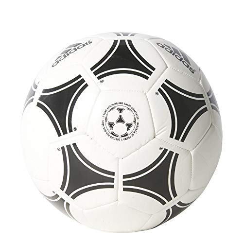
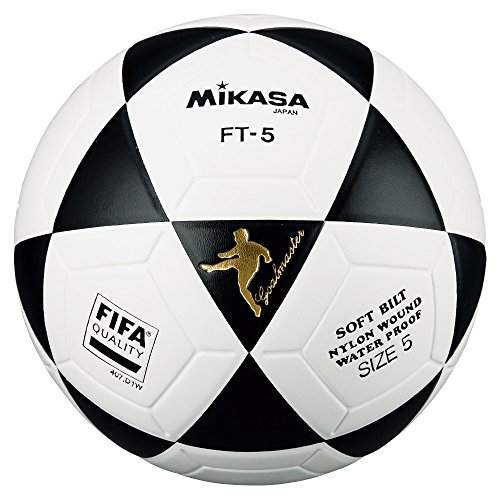
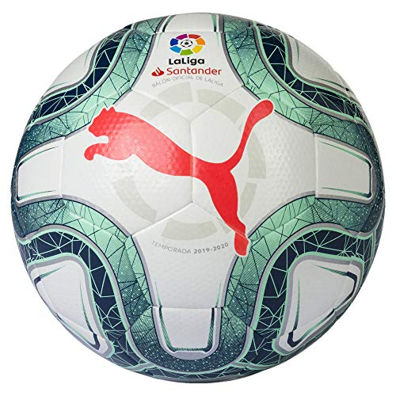
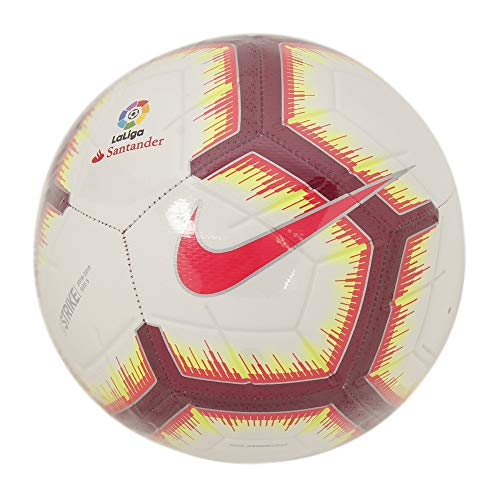
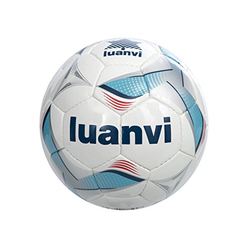
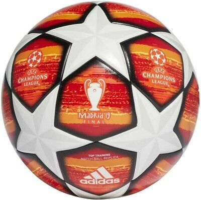
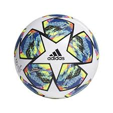

Mejores ligas 2020

se considera a partir de 1863, año de fundación de The Football Association, aunque en sus orígenes, al igual que los demás códigos de fútbol, se remontan varios siglos en el pasado, particularmente en las islas británicas durante la Edad Media.12 Si bien existían puntos en común entre diferentes juegos de pelota que se desarrollaron desde el siglo III a. C.2
Los primeros códigos británicos que dieron origen al fútbol se caracterizaban por su poca organización y violencia extrema.3 No obstante, también existían otros códigos menos violentos y mejor organizados. Quizás uno de los más conocidos fue el calcio florentino, deporte de equipo muy popular en Italia que tuvo incidencia en los códigos de algunas escuelas británicas.4 La formación definitiva del fútbol tuvo su momento culminante durante el siglo XIX(19).En 1848 representantes de diferentes colegios ingleses se dieron cita en la Universidad de Cambridge para crear el código Cambridge, que funcionaría como base para la creación del reglamento del fútbol moderno.5 Finalmente, en 1863 en la ciudad de Londres se oficializaron las primeras reglas del fútbol.6
Desde entonces el fútbol ha tenido un crecimiento constante, hasta llegar a ser el deporte más popular del mundo con unas 270 millones de personas involucradas.7 Con la realización de la primera reunión de la International Football Association Board en 1886 y la fundación de la FIFA en 1904, el deporte se ha expandido hasta llegar a todos los rincones del mundo. A partir de 1930 se comenzaría a disputar la Copa Mundial de Fútbol, que se convertiría en el evento deportivo con mayor audiencia del mundo.8
Mejores ligas 2020

Mejores Jugadores del mundo
A tener en cuenta A continuación, te explicamos de forma breve y precisa cuáles son los aspectos a los que debes prestar atención a la hora de escoger un balón.
El material: Los interiores están fabricados con tejidos irrompibles, tipo nailon, dispuestos en varias capas. Estas, a su vez, se cubren de cuero sintético de poliuretano, un material altamente resistente que ayuda a mantener la forma intacta del esférico.
El tamaño: La talla reglamentaria que se utiliza en partidos oficiales de fútbol 11 es la 5. Pero hay marcas que fabrican varios tamaños para adaptarse a otras categorías inferiores. Por lo tanto, encontraremos la talla 4 para los sub-13, sub-11 y sub-9; y la talla 3 para aprendices o para la categoría sub-7.
El inflado: No te sorprendas al ver que el balón de fútbol que acabas de comprar viene sin hinchar. Por eso,tenga mano una bomba de aire con aguja para poder utilizarlo en cuanto lo recibas. El peso. Los cinco modelos de esta comparativa tienen el peso estipulado para un buen manejo y control del mismo: entre 420 y 450 gramos.
       Ir a pagina skate